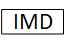
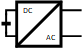
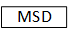

2. System Voltage And Current Monitoring
Several different voltages inside a battery system need to be measured. The exact number of voltages is dependent on the system topology and the configuration of the battery system.
Fig. 3.1 shows the voltages that need to measured in a multi-string system, here for example for a 3-string system. The symbols are explained in Table 2.7. The colors are explained in Table 2.8.
The left side of the image shows the Battery Pack. The Battery Junction Box is depicted in the center of the figure with an indicated connected application shown on the right side the of the picture.
Symbol |
Meaning |
|---|---|
Contactor |
|
Current sensor |
|
Fuse |
|
 |
Insulation measurement device |
 |
Inverter |
 |
Manual service disconnect |
Resistor |
Symbol |
Meaning |
|---|---|
Power path |
|
Second power path (optional) |
|
CAN |
|
Contactor control and feedback |
|
Insulation measurement line |
|
Daisy-chain |
2.1. Multi-String System
The following section describes important parameters within a multi-string battery pack.
2.1.1. Measurements Inside the Battery Pack
Fig. 2.3 Voltages to be measured in a multi-string system inside the battery pack (click to enlarge)
The strings are depicted in ascending order from right to left starting with
string 1 (S1) until left-most string m (Sm).
Each string consists of n modules, where every module has its own foxBMS Slave Unit.
Each string features a current sensor, a string fuse and one or two string
contactors.
Thus, the following voltages need to be measured in each string:
String voltage, short VSm, where
mindicates the number of the string.Fused string voltage, short VFSm, where
mindicates the number of the string. It is measured between the lowest module and after the string fuse.Pack voltage, short VPm, where
mindicates the number of the string. It is measured between the negative pole of the lowest module and behind the positive string contactor. This voltage is identical for all connected strings and enables measurement validation.
The current sensor additional measures each string current.
Comprehension of measured voltages and current in the pack:
Symbol |
Description |
|---|---|
VSm |
Voltage of string m |
VFSm |
Voltage after string fuse of string m |
VPm |
Pack voltage |
ISm |
Current in string m |
2.2. Single-String System
A single-string system reduces the amount of required voltage and current measurements. Fig. 2.4 shows the single-string topology.
The list of measurements is therefore reduced to Table 2.9 and no further measurements inside the string are required.
Symbol |
Description |
|---|---|
VP |
Pack voltage |
VFP |
Pack voltage after main fuse |
VSV |
System voltage |
VSV2 |
System voltage: second power path |
IP |
Pack current |
2.3. Measurements Inside the Battery Junction Box
The pack voltage is measured before the main fuse.
The fused pack voltage is measured after the main fuse.
The system voltage is measured after the contactors.
optional: If the system uses a second power path, the second power path voltage is measured after the contactors of the second power path.
Comprehension of measured voltages and current in the battery junction box:
Symbol |
Description |
|---|---|
VP |
Pack voltage |
VFP |
Pack voltage after main fuse |
VSV |
System voltage |
VSV2 |
System voltage: second power path |
IP |
Pack current |

{kind=link}
{kind=link}
{kind=link}
{kind=link}